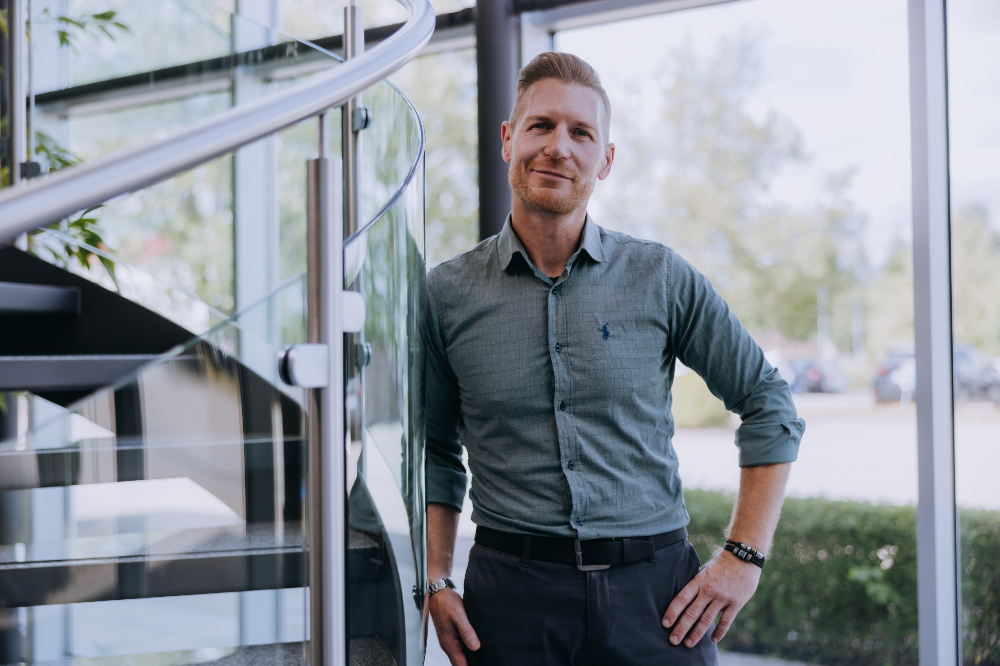

Über uns
Mit über 20 Jahren Erfahrung und Expertise im Qualitätsbereich der Medizintechnik trainieren wir Sie fundiert, kompetent und lösungsorientiert. Wir sind spezialisiert auf die praxisorientierte Qualifizierung von Mitarbeitenden im Qualitätsmanagement, in der Qualitätssicherung sowie im Bereich Regulatory Affairs mit Produkt- und Herstellerverantwortung – insbesondere von nicht spezialisierten Fachkräften und/oder branchenfremden Quereinsteigern. Unsere Trainingsdienstleistungen sind sehr gut verständlich, in deutsch/englisch verfügbar, sofort umsetzbar, effizient und jederzeit auch betriebswirtschaftlich messbar.
Unsere Erfolgsquote der wirksamen Wissensvermittlung liegt bei 100%.

Leistungen
- Onboarding & Qualifizierung: Einführung und gezielte Schulung im Qualitätsmanagement und in der Qualitätssicherung
- Qualitätsvorausplanung: Einführung und gezielte Schulung für APQP, FMEA, Prüfplanung und Kontrollpläne für Entwicklung und Produktion
- Ausbildung interner Auditoren & Prozesseigner: Interdisziplinäres Training für funktionsübergreifende Qualitätssicherung
- Validierung & Risikomanagement: Einführung und gezielte Schulung bei Prozess- und Produktvalidierungen sowie Risikoanalysen
- Effizientes Lieferantenmanagement: Einführung und gezielte Schulung zur Bewertung, Auswahl und Entwicklung von Lieferanten nach regulatorischen Anforderungen
- PRRC (Responsible Person for Regulatory Compliance): Einführung und gezielte Schulung der PRRC-Rolle gemäß MDR inklusive vollständiger Verantwortungsübernahme für alle Produktregularien im EU-Markt
Für wen wir arbeiten
Unsere Leistungen richten sich an Unternehmen im Umfeld von Medizinprodukten, insbesondere:
- Produzierende Unternehmen
- Hersteller und Inverkehrbringer
- Händler und Importeure
- Bevollmächtigte nach MDR/IVDR
- Organisationen nach ISO 13485, 21 CFR Part 820 (FDA) und GMP
Warum OK?
- Langjährige QM-Erfahrung im normativen und regulierten Bereich - ISO 13485, MDR, IVDR, GMP
- Praxisnahe Umsetzung und verständliche Vermittlung – auch für Quereinsteiger
- Individuelle Beratung mit wirtschaftlichem Fokus
- Effizient und betriebswirtschaftlich messbar
Kontakt
OK – Quality Management Consulting & Training
Oliver Kirn
Rosenstraße 3
75328 Schömberg, Deutschland
✉️ qm-consultant-kirn@web.de
☎️ +49 163 5310819
About us
With over 20 years of experience in the field of medical device quality, we offer well-founded, competent and solution-oriented consulting and training. We specialize in the practical qualification of employees in quality management – especially those with less formal training, less specialization or who are career changers. Our consulting and training services are easy to understand, immediately applicable, efficient and economically measurable at any time.
Services
- Onboarding & Qualification: Introduction and targeted training in quality management and assurance
- Advanced Quality Planning: APQP, FMEA, test planning and control plans for development and production
- Training for Internal Auditors & Process Owners: Interdisciplinary training for cross-functional quality assurance
- Validation & Risk Management: Support with process and product validation as well as risk analysis
- Efficient Supplier Management: Evaluation, selection and development of suppliers according to regulatory requirements
- PRRC (Responsible Person for Regulatory Compliance): Assumption of the PRRC role in accordance with MDR, including full responsibility for all product regulations in the EU market
Target Audience
Our services are aimed at companies in the medical device sector, especially:
- Manufacturers and producers
- Distributors and importers
- Authorized representatives (MDR/IVDR)
- Organizations under ISO 13485, 21 CFR Part 820 (FDA) and GMP
Why OK?
- Many years of QM experience in regulated industries
- Practical implementation and clear communication – even for career changers
- Individual consulting with economic focus
- Efficient and economically measurable
Contact
OK – Quality Management Consulting & Training
Oliver Kirn
Rosenstraße 3
75328 Schömberg, Germany
✉️ qm-consultant-kirn@web.de
☎️ +49 163 5310819